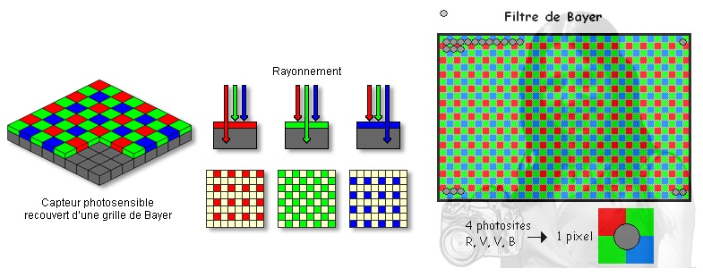

Un capteur photographique est composé d'une trame de photosites qui produisent de l'électricité lorsqu'ils reçoivent de la lumière. Chaque photosite est recouvert d'un filtre coloré (rouge, vert ou bleu). La tension produite est convertie en valeurs numériques.

Lien externe